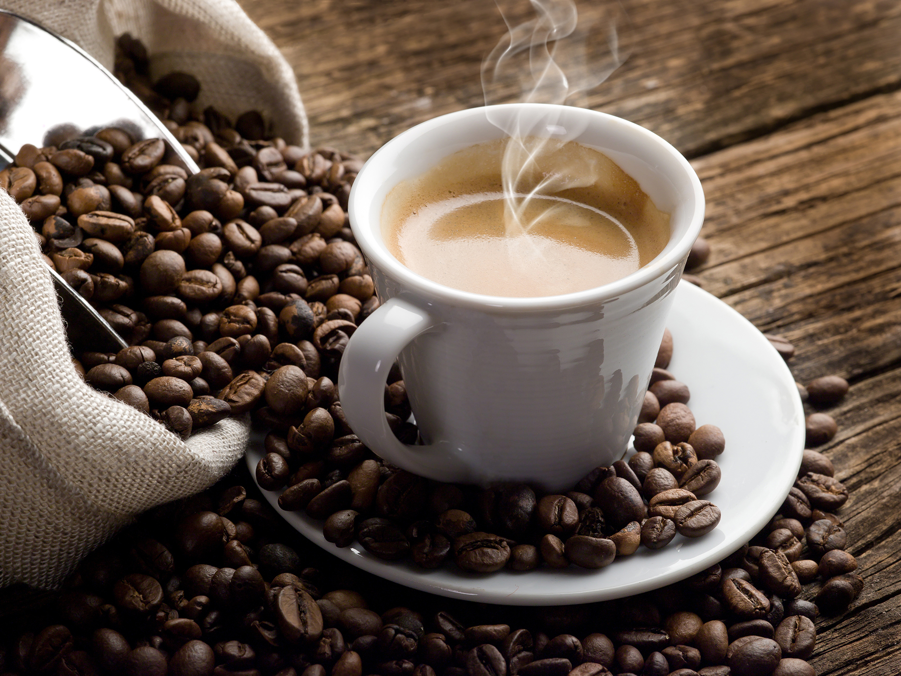

Marilyn Café
Café e gatinhos

Gosta de café e gatinhos?
Ah, o café e os gatinhos - uma combinação perfeita para momentos de aconchego e tranquilidade. Imagine-se em uma manhã ensolarada, com uma xícara de café quentinho em mãos e a companhia de adoráveis gatinhos ao seu redor.
O café, com seu aroma envolvente e sabor reconfortante, desperta nossos sentidos e nos prepara para enfrentar o dia. Ele nos presenteia com uma energia suave e nos convida a desacelerar, a apreciar cada gole e a saborear a tranquilidade que ele traz.
Venha conhecer nossos gatinhos e nossos cafézinhos!